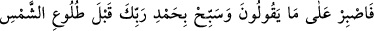

yapmadan yaratmaya da kâdirdi.
et-Te’vîlâtü’n-Necmiyye’de şöyle geçer: Biz ruhların semâlarını, hayallerin arzını ve
bu ikisi arasındaki nefisler, kalpler, sırlar ve sırların sırrını altı günde yarattık. Altı
günün mânâsı, altı mahlûkât türüdür. Bunlar da zikretmiş olduğumuz ruhlar, hayaller,
nefisler, kalpler, sırlar ve sırların sırrıdır. Ne kadar yaratılmış varsa bunların
kapsamındadır. Bunu iyi anla!
“Bize hiçbir yorgunluk çökmedi.” Yani hiçbir kuvvet ve de kudretin var edemeyeceği
bu varlıkları yaratmış olmamıza rağmen bir yorgunluk olmadı. Bize onların
yaratılışından bir zorluk ulaşmadı.
Râğıb şöyle demiştir: Âyette geçen “lüğûb” kelimesi, yorgunluk ve hastalık demektir.
Nitekim Arapçada “Bize koşarak, yorgun (lâğî), korkmuş ve bitkin bir vaziyette geldi”
şeklinde bir kullanım vardır.
Kâmûs’ta da şöyle geçer: Lüğûb, tamamen âciz bırakmak demektir.
Tâcü’l-mesâdır’da, âciz olmak, zayıf olmak, yorulmak anlamları belirtilir. Zira bu iş
bir zaafiyet doğursaydı fesadın da doğması gerekirdi. Bu da bizim istemediğimiz
birşeyin ortaya çıkmasına sebep olur, bundaki tasarrufumuz, diğerlerindeki
tasarrufumuzdan farklı olurdu. Siz de görüyorsunuz ki emrin yerine getirilmesi ve
tasarrufun tamama ermesi bakımından bütün hepsi aynıdır, eşittir.
et-Te’vîlâtü’n-Necmiyye’de şöyle geçer: Bize bir yorgunluk dokunmadı. Çünkü onlar,
“Kün” emrinin işâretiyle yaratılmıştır. “Emrimiz ancak bir tek emirdir. Göz kırpması
gibidir” (el-Kamer, 54/50) âyetinde de buyurulduğu üzere. Allah’a nasıl yorgunluk
dokunabilir ki? O Samed’dir, O’nun zâtında hiçbir değişiklik olmaz. Bu âyet, Yahudi
cahillerinin “Allah âlemi yaratmaya Pazar günü başladı ve Cuma günü bitirdi,
Cumartesi günü istirâhat etti ve arşa uzandı” şeklindeki boş iddialarına da bir
reddiyedir. Allah Sübhânehû, onların dediklerinden çok daha üstündür. Âlimler, bu
ümmete teşbih yoluyla bildirilenlerin Yahudilere de bildirildiğini ve içlerinden bunu
anlayan kimselerin de çıktığını söylerler.
Fakir (Bursevi) şöyle der: Bu âyet ile “Gökleri ve yeri yaratan ve onları
yaratmaktan yorulmayan Allah’ın, ölüleri diriltmeye gücünün yeteceğini
görmediler mi?” (el-Ahkâf, 46/33) âyeti benzerlik arz ederler. Âyetin devamındaki
“Onların dediklerine karşı sabret” kısmı da buna delâlet eder. Allah, müşriklerin
diriltme husûsundaki inkâr ve imkânsız/uzak bulmaya dayalı batıl inançlarına karşı
sabretmeyi emretmektedir. Zira bu yaratışları yorulmadan ve duraksamadan yapan
Allah, onları diriltmeye de kendilerinden intikam almaya da kadirdir. Sabredilmesi
istenen husûsun Yahudilerin küfür, teşbih ve diğer yanlışlıkları olması da muhtemeldir.